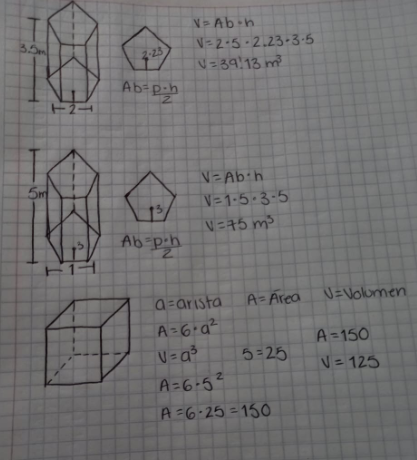
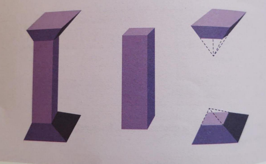
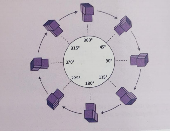
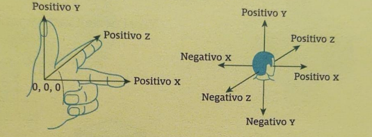
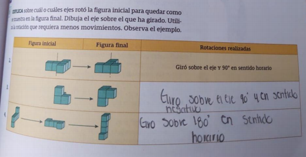
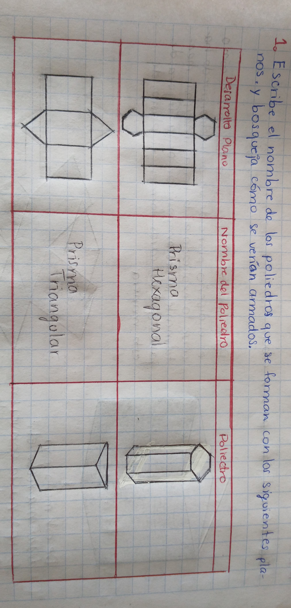
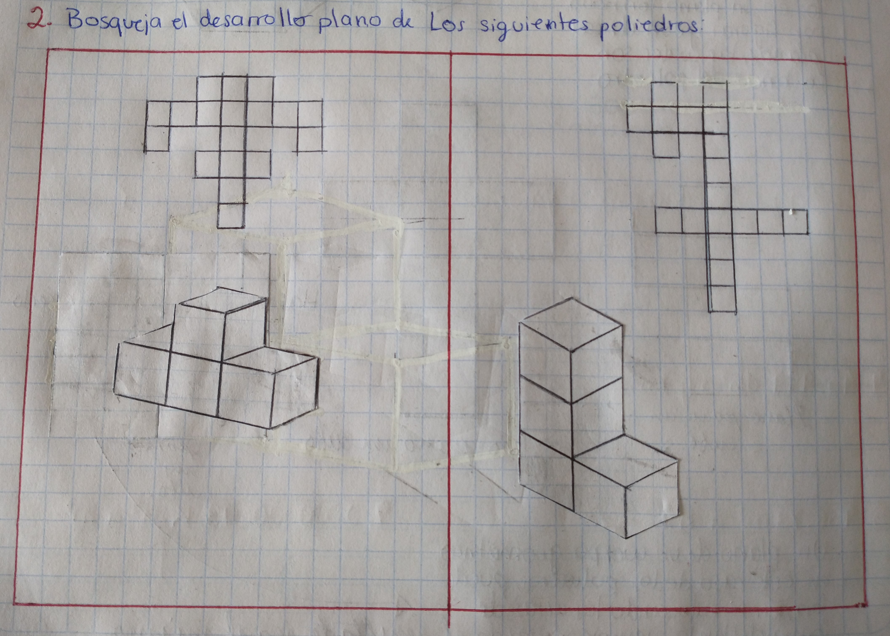
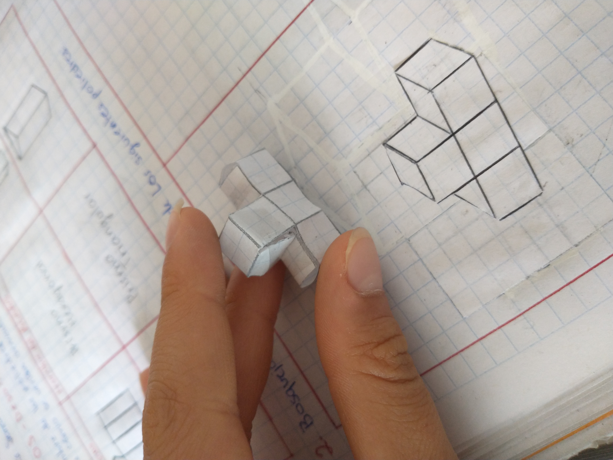
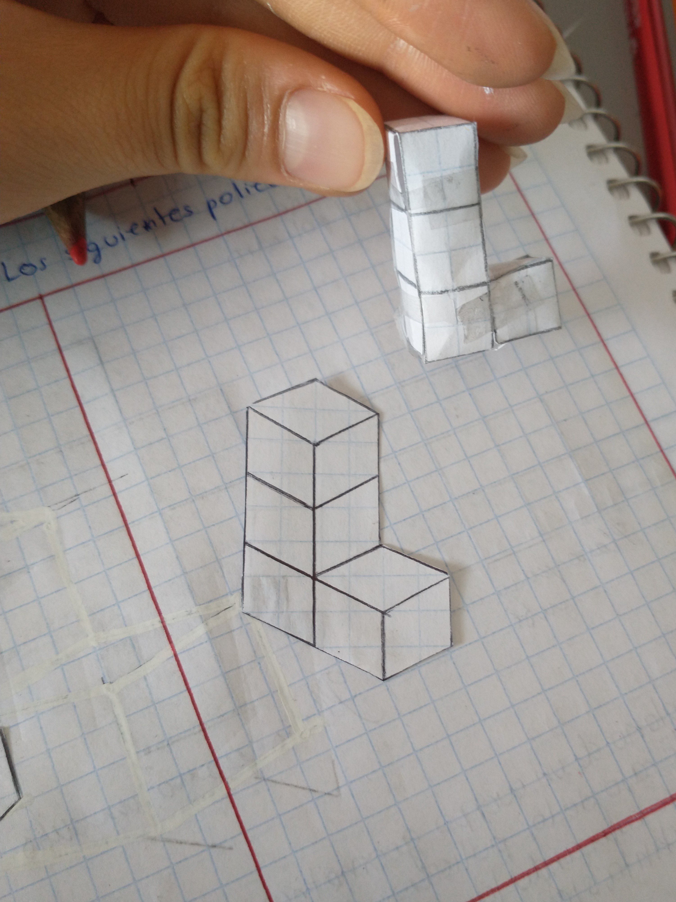

VOLÚMENES
Explicación Teórica:
El volumen de un cuerpo se refiere al espacio que ocupa, un cuerpo tiene tres dimensiones y para calcular el volumen es necesario conocer las medidas de ellas.
La capacidad el número de unidades que caben dentro de un cuerpo.
El prisma: es una figura que tiene dos caras iguales y paralelas unidades por caras planas, en el prisma podemos considerar como altura el segmento perpendicular de la base:

Un paralelepípedo: es un prisma en el que todas sus caras son paralelogramos es decir son cuadrados, rectángulo, rombo o romboide:

El cilindro es un caso especial ya que se saca el volumen así: volumen = área del círculo × altura = pi r2h.
Explicación Práctica:

Ejercicios:
1. En el restaurante de Alfredo se utilizan cajas con medidas de 40cm ×30 × 20, ¿cuál es su volumen?
R= 24,000
Para calcular el volumen se sustituyen las medidas de la caja en la fórmula y se multiplica
2. Ayer compré un mueble rectangular de 2000cm × 1500×1500, quiero saber su volumen para ponerlo en mi sala.
R= 4, 500, 000, 000
3. Mi botella de agua es cilíndrica que de radio mide 20 y su altura es de 60 C, quiero saber su volumen.
R= 73,398.9
Videos adicionales:
Explicación Teórica:
Algunos objetos, debido a su forma, son capaces de contener sustancias, lo cual hace posible medir su capacidad y su volumen.
La capacidad es aquello que indica cuánto puede contener un recipiente. Generalmente se mide en litros (L), o en decímetros cúbicos (dm^3).
El volumen es la cantidad de espacio que ocupa un cuerpo. La unidad utilizada para medirlo es el metro cúbico (m^3).
El procedimiento utilizado para realizar conversiones de un múltiplo o submúltiplo de metros cúbicos es parecido al que se utiliza para convertir las unidades de longitud y área (Kilómetros, metros, etc.), la diferencia está en que las multiplicaciones o divisiones son por 1 000.

Explicación Práctica:
Conversión de una unidad mayor a una menor:

Conversión de una unidad menor a una mayor:

Conversiones en ejemplos de la vida cotidiana:


Ejercicios:


Videos adicionales:
IMAGINACIÓN ESPACIAL
Explicación Teórica:
De acuerdo a la geometría clásica, se denomina poliedro a ciertos cuerpos geométricos tridimensionales, de caras planas y que encierran un volumen finito.
Es decir que un poliedro es una porción acotada de espacio geométrico, limitada por distintos polígonos.
Su denominación depende del número de caras que presente, empleando para ello prefijos numerales de ascendencia griega y la terminación –aedro.
Por ejemplo: tetraedros (4 caras), pentaedros (5 caras), hexaedros (6 caras) y así sucesivamente.
POLIEDROS REGULARES:
Se llaman poliedros regulares a los poliedros que tienen todas sus caras iguales y son polígonos regulares. Únicamente existen 5 poliedros regulares. Por sus especiales características, además de la fórmula del Volumen se muestra la fórmula simplificada para calcular el Área.


PRISMAS Y PIRÁMIDES:
Las características de estos poliedros y la fórmula para calcular su Volumen se muestran a continuación.


.png)
Explicación Práctica:
El Área de los poliedros se calcula sumando las áreas de todas sus caras. Para este cálculo es necesario saber bien cómo se calcula el área de los polígonos y de los Círculos.
El volumen de los poliedros se obtiene, de forma general, multiplicando el Área de la Base por la Altura.
V = Ab.h
Para calcular el Volumen (medidas de volumen), es necesario que todas las medidas lineales y de superficie estén en la misma unidad.
Ejercicios:
Videos adicionales:
Explicación Teórica:
Los sólidos compuestos están hechos de dos o más sólidos geométricos. Muchas estructuras comunes están compuestas o pueden descomponerse en solidos más sencillos, aunque esto pueda pasar inadvertido.
Explicación Práctica:
La columna de la izquierda se puede descomponer en tres sólidos como se puede observar en las figuras: dos pirámides cuadrangulares truncadas y un prisma de base cuadrada.
Ejercicios:


Videos adicionales:
Explicación Teórica:
La proyección ortogonal es un sistema de representación de una figura que está en el espacio se proyecta en un plano, se forma a partir de una proyección en forma perpendicular de todas las recetas en un plano y permite mostrar dos o más puntos de vista distintos
La perspectiva sirve para crear la profundidad y posición relativa de los objetos. Se le llama vista a la representación que se tiene de un objeto desde un ángulo determinado, esto es útil en el diseño de figuras tridimensionales.
Ubicación espacial a partir de un punto de referencia, se refiere a la habilidad para ubicar una posición o una vista en un espacio considerado ciertos puntos fijos.
Explicación Práctica:
Es hacer una figura tridimensional, y recrearlo de diferentes ángulos, como si lo vieras de frente, de lado, de arriba etc.
Ejercicios:

.jpg)
Videos adicionales:
Explicación Teórica:
Cuando se dice que una figura rota significa que gira en determinado sentido. Puede girar en sentido positivo (contrario a las manecillas del reloj) o en sentido negativo (como las manecillas del reloj).
El giro o rotación se mide en grados. Una forma común de medir las rotaciones es indicar si una figura rota un cuarto de vuelta (90°), media vuelta (180°), tres cuartos de vuelta 270°) o da una vuelta completa para quedar como al inicio (360°).
En el mundo real tiene tres dimensiones; es necesario representar algunas figuras en tercera dimensión, pero también puede rotar en algún sentido respecto a tres dimensiones.
DATO INTERESANTE:
Los ejes también tienen un extremo positivo y un extremo negativo, y su intersección se considera como el punto (0, 0,0) o el origen del sistema de coordenadas XZY.

Explicación Práctica:
A continuación podemos observar como la figura va rotando 45°, 90°, 135°,180°,225°,270°,315° hasta dar una vuelta completa (360°) en sentido horario o negativo.
Para representar las dimensiones antes mencionadas, a los ejes X y Y del plano cartesiano se aumenta en un eje llamado Z. Para recordarlos se puede hacer lo siguiente; al ponerse de pie, el eje X es el que va de hombro izquierdo al derecho, el eje Y es el que va de los pies a la cabeza y el eje Z es la profundidad, va del frente a la vista hacia atrás de la persona.
Otra forma de ubicar los ejes es acomodando los dedos de la mano como se muestra a continuación, en el sistema de coordenadas XYZ:
Ejercicios:
Videos adicionales:
Explicación Teórica:
Desarrollo plano:
Es el molde formado por figuras planas mediante el cual se puede construir un cuerpo geométrico.
Es muy utilizado en ciertos elementos, por ejemplo:
Los rompecabezas.
El armar de maquetas, edificios, e incluso vehículos.
Pensar en el desarrollo plano de las figuras facilita el cálculo de su área lateral, es decir, el área de las caras que conforman el poliedro.
Cabe mencionar que identificar el desarrollo plano de un poliedro, e incluso el mismo cuerpo geométrico, puede ser complicado, por lo que aquí hay algunas recomendaciones para poder relacionarlos:
Contar las caras del poliedro, las cuales deben ser las mismas que tiene el desarrollo plano.
Observar la forma de las caras del poliedro, éstas también deben de coincidir con todas las figuras que conforman este desarrollo.
Imaginar que el molde “se va doblando” es útil, ya que puede considerarse que los “choquen” o “se encimen” las caras del poliedro.
Otra estrategia muy parecida a la anterior, consiste en imaginar que “van pegándose” los lados entre ellos, por lo que tales lados deben medir lo mismo.
Explicación Práctica:
Explicación de resolución del ejercicio:

Ejercicios:

 
Videos adicionales:
Explicación Teórica:
El área superficial de un objeto sólido es una medida del área total que ocupa la superficie del objeto.
La definición matemática del área de superficie en presencia de superficies curvas es considerablemente más complicada que la definición de la longitud de arco de curvas unidimensionales, o del área de superficie para poliedros (es decir, objetos con caras poligonales planas), para los cuales el área de superficie es la suma de las áreas de sus caras.
A las superficies lisas, como una esfera, se les asigna un área de superficie utilizando su representación como superficies paramétricas. Esta definición de área superficial se basa en métodos de cálculo infinitesimal e implica derivadas parciales y doble integración.
Explicación Práctica:


Ejercicios:
*Pendiente el ejercicio, pero se dan las fórmulas
Videos adicionales: